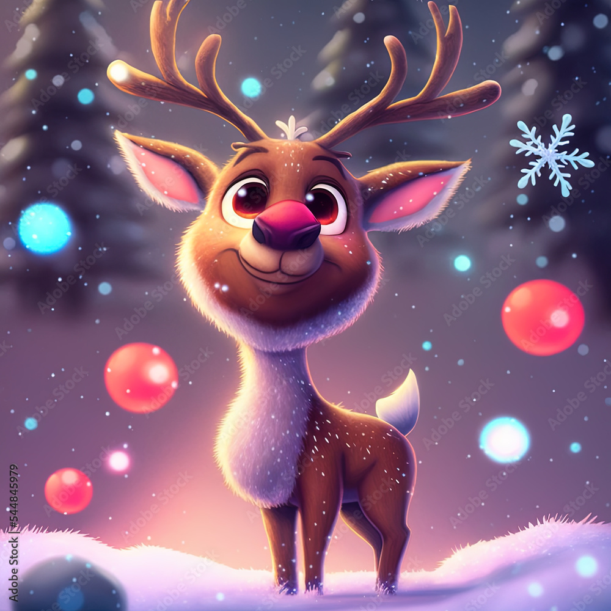

OUR HELPERS
Santa's helpers, known as elves, work tirelessly all year round to craft magical gifts and ensure a joyful holiday season for children everywhere.
Santa
Santa Claus, the beloved figure known worldwide, is the jolly old man with a flowing white beard and twinkling eyes, dressed in a red suit trimmed with white fur. Residing at the North Pole, Santa spends the year preparing for Christmas, overseeing his workshop where dedicated elves make toys and gifts. On Christmas Eve, he embarks on his magical journey around the globe, delivering presents to children with the help of his trusty reindeer.
Elf Twinkle
A small, lively elf with sparkling green eyes and a charming smile. He is known for his craftsmanship in toy-making and is always top-notch at assembling complex puzzles. Twinkle wears a red hat with a bell that jingles with every step, adding to the festive atmosphere around him.
.png)
Elf Sparky
A cheerful and energetic elf with short, dark blonde hair and bright blue eyes. Sparky especially enjoys working with lights and decorations, creating amazing light installations for the holidays. He is always ready to add a bit of magic to any project he takes on.
Rudolph
The legendary reindeer with a glowing red nose, leads Santa's sleigh through the night sky. His shiny nose helps navigate through the darkest nights, guiding the entire reindeer team. Rudolph is known for his courage and dedication, always ready to assist Santa in the most challenging conditions.
